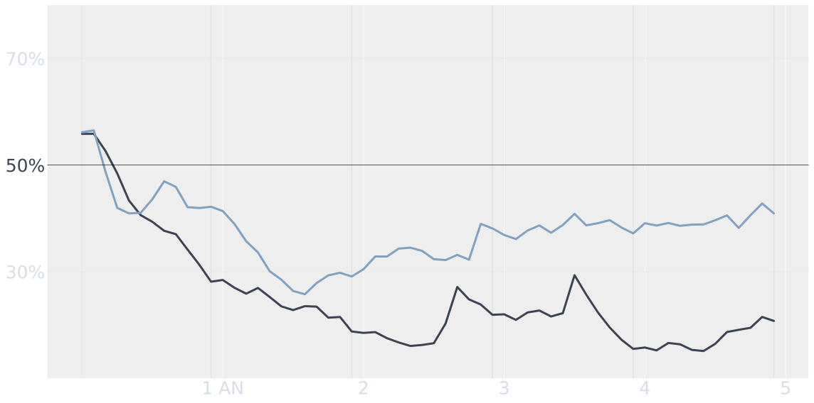

Macron est-il populaire ?
Une infographie représentant la popularité du président Emmanuel Macron calculée à partir des sondages d'opinion. Prend en compte la taille de l'échantillon ainsi que les biais des instituts et méthodes utilisées. La méthodologie est décrite dans cet article.
Pour des analyses régulières, suivez nous: @pollsposition.
Comment Macron se compare aux présidents précédents
La courbe bleue représente la popularité calculée par notre modèle pour le président Emmanuel Macron (en % d'opinions positives). Les courbes noires représentent les popularités des présidents passés calculées par notre modèle elles-aussi.
Chirac (2e mandat)

Sarkozy

Hollande

L'équipe
Le site ainsi que le modèle statistique ont été développés par Alexandre Andorra et Rémi Louf.
Dernière mise à jour le 10 juin 2022